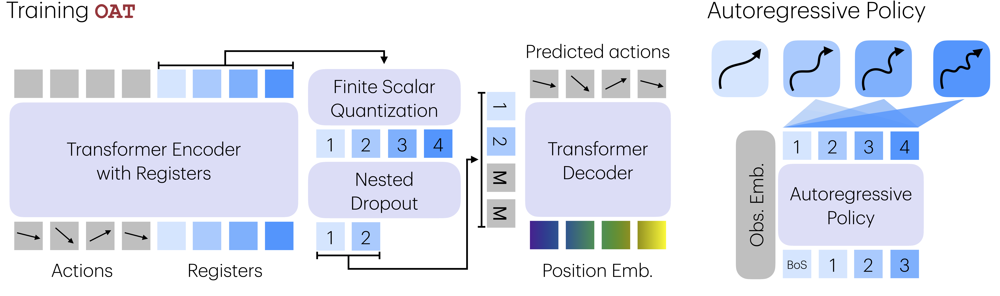

Ordered Action Tokenization
OAT 是一种有序、前缀可解码的动作表示，兼顾紧凑性、全域可解码性和高自回归可建模性。
RSS 2026 录用论文，基于原始 文章 扩展，并加入原生网页交互控件。
1Harvard University · 2Stanford University

动作 token 不只是实现细节。
自回归机器人策略需要一种方式，把连续控制信号转成离散符号。这个转换决定了策略要生成多少步、每个生成序列是否都能执行， 以及下一个 token 有多容易预测。OAT 认为，一个好的动作 tokenizer 应该同时优化这三点。
- 问题：分箱方法有效但序列太长；FAST 很紧凑但可能无法解码；学习式 latent tokenizer 很紧凑，但自回归可建模性常常较弱。
- 方法：OAT 学习一小段离散 register token，并用从粗到细的可建模性优先级来训练它们。
- 结果：策略可以选择生成多少个高可建模性 token，在推理成本和动作精度之间取舍，同时始终解码出有效动作块。
本文会反复用到的五个术语。
- 动作块
- 一次性预测的一小段未来机器人动作序列，执行其中一部分后再重新规划。
- Tokenization
- 把连续动作映射成离散符号，使自回归策略可以对其建模。
- Detokenization
- 把生成的符号反向映射回可执行的连续机器人动作。
- 自回归策略
- 根据观测和已经生成的 token 来预测下一个动作 token 的策略。
- 可建模性
- 生成模型学习、采样并在下游使用该 token 分布的难易程度。
1. 为什么要关心动作 tokenization？
离散动作 token 正在成为现代机器人学习系统中越来越重要的设计选择。近期系统中： RDT-2 在第一阶段训练中使用 vector-quantized (VQ) 动作 token； TRI 的 LBM/VLA 使用 FAST 和 VQ 风格 tokenization；而 BEHAVIOR 2025 Challenge 的 获胜方案 在训练和推理中集成了 FAST token。
在这些系统中，动作 tokenization 在预训练阶段尤其关键：离散 token 为大容量序列模型和连续机器人控制之间提供了结构化、可扩展的接口。 因此，动作 tokenizer 的选择不仅影响效率，也越来越深刻地影响模型能学习和泛化哪些行为。
2. 一个被忽视的维度：可建模性。
经典理论如 率失真权衡 关注压缩率和重建精度之间的平衡。在生成式 AI 时代，我们认为第三个维度，可建模性，同样关键但经常被忽视： 生成模型捕捉某种表示分布的难度。结构不佳的表示可能既紧凑又准确，但从根本上难以建模。
这是核心区别：一个 tokenizer 可以很好地重建动作，却仍然不是策略学习的好接口。如果 token 流的自回归可建模性较低， 或者稀疏且高熵，模型会在每一次下一个 token 预测中付出代价。表示不只是存储格式；它就是策略实际面对的学习问题。
更短的动作编码可以降低自回归深度和延迟。
连续机器人控制仍然需要足够精度，尤其是接触丰富的执行场景。
Token 顺序应该让下一个 token 预测更容易，而不只是让它可行。
对机器人控制而言，只有当下游策略能可靠建模这些 token 时，tokenizer 才真正有用。 低重建误差很重要，但它并不保证 token 序列具有稳定的从左到右结构。
3. 我们希望满足的三项性质。
我们认为，面向自回归策略的有效动作 tokenizer 应该满足三项关键性质：
- (P.1) 合理压缩。 该表示应足够压缩动作块，以支持高效序列建模，但不能过度压缩到丢失太多信息。
- (P.2) 全域可解码。 detokenization 映射应当是定义良好的 全函数： 离散 token 空间中的每个 token 序列都必须解码成有效动作块。这一点很关键，因为策略在推理时可能生成任意 token 序列。 如果解码只在部分输入上有定义，无效 token 就可能导致未定义行为或执行中的灾难性失败。
- (P.3) 可预测排序。 Token 序列应该具有有意义的从左到右因果结构，并与下一个 token 预测对齐。 这种结构对可建模性至关重要，使自回归模型能够学习稳定、可预测的 token 动态。
下文会逐一解释这些性质。
哪个 tokenizer 满足这些设计要求？
选择一个 tokenizer 家族，比较压缩率、全域可解码性和 自回归可建模性。
分箱方法可以全域解码，但会产生又长又扁平的 token 序列，难以让自回归策略高效建模。
4. 现有动作 token 缺少什么？
每类现有 tokenizer 都以不同方式偏离目标。实际失败模式取决于它放弃了哪项设计要求。
每个生成 token 都能解码，但策略必须生成数百个扁平的维度-时间 token。
频域结构有助于下一个 token 预测，但任意 BPE 序列可能无法解码。
神经解码器让输出有效，但 token 序列的自回归可建模性较弱。
Token 被学习成渐进序列，因此早期预测携带粗粒度运动结构。
Binning. 最常见的方案是按维度、按时间步分箱。它很简单，但扩展性差：长时域和高维动作可能让每个动作块产生数百个 token， 显著拖慢训练和推理并增加延迟。更重要的是，这类又长又扁平的序列在跨维度上可建模性较差：知道 a[t, 1...i] 对预测 a[t, i+1] 帮助很小，使分箱方法与自回归生成不够匹配。
频域变换。 FAST 等基于频率的方法具有高信息密度 (P.1)，并引入从低频到高频的结构 (P.3)： 早期 token 捕捉全局轨迹结构，后期 token 细化细节。然而，FAST 违反了 P.2（全域可解码性）。因为 Byte Pair Encoding (BPE) 会产生可变长度序列，任意 token 序列未必能解码成有效的固定大小频域表示，从而导致未定义行为和运行时失败。 更多细节见论文附录以及 Hugging Face 上的讨论。
普通 Latents。 学习式 encoder-decoder latent tokenizer 可以获得较强压缩 (P.1)，神经解码器也能保证全域可解码 (P.2)。 但所得 token 空间通常自回归可建模性较弱：token 位置没有为下一个 token 预测提供稳定的从左到右结构。 这使其难以适配依赖有意义左到右结构 (P.3) 来稳定生成的策略。
总结来说，现有方法各自满足了部分设计要求，但没有同时实现压缩、全域可解码和高自回归可建模性。
5. Ordered Action Tokenization
我们提出 OAT，一个学习式 autoencoder 框架，把动作块离散化为有序 token 序列。 OAT 使用基于 transformer 的 register token 编码动作，用 FSQ 离散化所得 latent， 再通过条件解码器重建动作。为提升自回归可建模性，我们在训练中结合 register token 上的因果注意力和 nested dropout。 这些设计共同鼓励形成高可建模性的 latent 表示：早期 token 捕捉粗粒度全局结构，后期 token 细化细节。
- 概括动作块。 Transformer encoder 读取连续动作序列，并把重要时间信息写入固定数量的 register token。
- 离散化 registers。 Finite scalar quantization 把 register latents 转成自回归策略可以预测的离散 token。
- 强制从左到右结构。 因果注意力让后面的 register 依赖前面的 register，使表示与下一个 token 生成对齐。
- 用缺失尾部训练。 Nested dropout 在 tokenizer 训练中随机遮蔽后续 token，因此早期 token 必须承载最高优先级信息。
- 解码回控制信号。 条件解码器把生成的 token 前缀映射回可执行的连续动作块。

6. 为什么顺序能提升可建模性？
OAT 引入的排序可以从信息论得到自然解释。 Shannon 表明， 一个事件的最优编码长度随其概率的负对数 - log p 缩放：常见模式需要更少 bit，而罕见事件需要更多表示容量。 动作块也有类似的偏斜分布：大多数轨迹共享常见的粗粒度结构，而细粒度偏差较少出现。
从这个角度看，OAT 学到了一种渐进编码。早期 token 捕捉高概率、全局共享的运动模式， 后期 token 编码越来越罕见的残差细节。这种顺序从 nested dropout 中自然出现：因为解码器必须从部分前缀重建动作， tokenizer 被鼓励按频率和重要性递减的顺序分配信息。结果是，前缀越长，重建单调改善；token 顺序也与自回归下一个 token 预测紧密对齐，而无需手工把物理特征分配给特定 token 位置。
7. 一个副产品：基于前缀的解码。
基于 OAT 训练的自回归策略不必生成到完整长度。由于 OAT token 序列的任意前缀都可以 detokenize 成有效动作块，OAT 支持基于前缀的执行， 从而在计算量和性能之间提供 anytime 权衡。短前缀带来更快但更粗糙的预测；长前缀以更高计算成本产生更精细动作。 这种灵活性自然来自有序 tokenization，不需要修改策略架构或训练目标，也使 OAT 区别于依赖固定长度 detokenization 的先前 tokenizer。
解码更少 token，动作仍然有效。
OAT 让每个前缀都可执行。更多 token 会细化轨迹，但在延迟重要时，策略可以提前停止。
1 个 token 可以解码出完整动作块，但重建较粗糙，且与真实轨迹有明显偏移。
每个前缀都会解码成完整动作块。绿色点是真实路标；红色点是从所选前缀重建出的完整动作块。 更多前缀 token 会减少红绿误差，并提升细粒度保真度。
交互式 MeshCat 可视化
这里可视化使用不同数量解码 token 得到的动作块重建。早期 token 捕捉运动的粗粒度全局结构， 额外 token 会逐步细化细节，生成越来越接近真实轨迹的结果。所有轨迹都由同一个模型生成。
8. 实验
我们在 20 多个任务上评估 OAT，覆盖四个仿真 benchmark (LIBERO, RoboMimic, MetaWorld 和 RoboCasa) 以及真实机器人执行。实验比较成功率、自回归深度和延迟、 可建模性消融，以及真实任务成功率，展示有序、高可建模性的前缀解码如何带来更强策略和更灵活推理。
- 关注单调性。 OAT1, OAT2, OAT4 和 OAT8 应该随着解码更多高可建模性 token 而提升。
- 比较同深度方法。 OAT8 和 QueST 都使用 8 个 token， 因此差异主要来自 token 结构，而不是 token 数量。
- 区分延迟和成功率。 更短前缀展示速度/性能权衡；消融实验检验可建模性目标是否真的起作用。
OAT 更优
OAT 稳定优于先前动作 tokenization 方案，并达到或超过最强 baseline； 同时，它还支持现有方法不具备的基于前缀的解码。OAT8 在仿真和真实 benchmark 中取得最佳性能。
| 策略 | LIBERO | RoboMimic | MetaWorld | RoboCasa | PnP Ball | Stack Cups |
|---|---|---|---|---|---|---|
| DP | 36.6 | 67.1 | 19.3 | 54.0 | 14/20 | 11/20 |
| Bin | 14.4 | 39.5 | 14.5 | 27.7 | 4/20 | 8/20 |
| FAST | 23.0 | 24.0 | 7.1 | 13.2 | 8/20 | 6/20 |
| QueST | 48.2 | 66.9 | 17.9 | 52.3 | 11/20 | 8/20 |
| OAT1 | 11.7 | 50.8 | 11.3 | 47.7 | 7/20 | 3/20 |
| OAT2 | 39.8 | 52.5 | 16.4 | 50.3 | 11/20 | 9/20 |
| OAT4 | 46.4 | 65.3 | 19.5 | 51.7 | 13/20 | 12/20 |
| OAT8 | 56.3 | 73.1 | 24.4 | 54.6 | 16/20 | 16/20 |
压缩率和推理延迟
OAT 在压缩率、推理延迟和策略性能之间提供平滑且可控的权衡。 在完整解码时，OAT 和 QueST 每次推理的计算量相同。
| 策略 | LIBERO | RoboMimic | MetaWorld | RoboCasa | ||||
|---|---|---|---|---|---|---|---|---|
| #Tok. | 延迟 | #Tok. | 延迟 | #Tok. | 延迟 | #Tok. | 延迟 | |
| DP | × | 42.0 | × | 38.1 | × | 37.7 | × | 35.3 |
| Bin | 224 | 517.2 | 224 | 509.5 | 128 | 306.6 | 384 | 888.3 |
| FAST | 44.2 | 114.4 | 53.1 | 142.0 | 49.8 | 129.7 | 69.7 | 166.1 |
| QueST | 8 | 27.1 | 8 | 29.6 | 8 | 31.4 | 8 | 30.2 |
| OAT1 | 1 | 10.5 | 1 | 11.3 | 1 | 15.5 | 1 | 13.5 |
| OAT2 | 2 | 13.2 | 2 | 15.3 | 2 | 17.9 | 2 | 15.8 |
| OAT4 | 4 | 17.4 | 4 | 18.4 | 4 | 22.1 | 4 | 19.8 |
| OAT8 | 8 | 27.4 | 8 | 29.9 | 8 | 31.3 | 8 | 30.0 |
Token 可建模性是成功关键
在所有 benchmark 上，移除诱导排序的目标都会导致性能稳定下降。 OAT× 的性能显著弱于 OAT4 和 OAT8，部分情况下甚至低于 QueST。
| 策略 | LIBERO | RoboMimic | MetaWorld | RoboCasa |
|---|---|---|---|---|
| QueST | 48.2 | 66.9 | 17.9 | 52.3 |
| OAT1 | 11.7 | 50.8 | 11.3 | 47.7 |
| OAT2 | 39.8 | 52.5 | 16.4 | 50.3 |
| OAT4 | 46.4 | 65.3 | 19.5 | 51.7 |
| OAT8 | 56.3 | 73.1 | 24.4 | 54.6 |
| OAT× | 35.2 | 61.1 | 17.6 | 48.5 |
真实机器人执行
90 多个真实机器人执行视频覆盖不同任务、方法和相机视角下的成功与失败尝试。重新加载会随机化初始配置。 FAST 执行中的停止主要由不可解码动作 token 引起。在这类情况下，出于安全原因， 策略被要求不输出任何动作并保持静止。
DP
该任务没有可用视频。
该任务没有可用视频。
Bin
该任务没有可用视频。
该任务没有可用视频。
FAST
该任务没有可用视频。
该任务没有可用视频。
QueST
该任务没有可用视频。
该任务没有可用视频。
OAT1
该任务没有可用视频。
该任务没有可用视频。
OAT2
该任务没有可用视频。
该任务没有可用视频。
OAT4
该任务没有可用视频。
该任务没有可用视频。
OAT8
该任务没有可用视频。
该任务没有可用视频。
9. 总结和开放方向。
这个项目中反复出现的一个问题是：在 flow 或 diffusion policy 等强连续模型存在时，动作 token 是否仍然必要？ 我们的观点是，未来机器人系统很可能会结合离散和连续表示，而不是二选一。一个具体例子是 BEHAVIOR 2025 Challenge 的 获胜方案， 它把离散动作 token 与连续动作 expert 集成在一起。
OAT 支持的一项关键能力是基于前缀的 detokenization：动作可以从可变长度 token 前缀解码出来， 从而在计算量和动作保真度之间实现 anytime 权衡。在本文中，自回归深度在部署时是固定的。 从信息论角度看，这并非最优。表示一个动作块所需的 token 数量应该取决于其内在复杂度，以及成功执行所需的精度。 简单、可预测的行为可以使用紧凑表示，而复杂、接触丰富的交互可能需要更深的自回归细化。 在线估计这种动作复杂度，并判断额外 token 何时能显著降低不确定性，仍然是开放问题。 我们认为，自适应自回归深度是未来工作的自然且重要方向，而这正是由 OAT 的有序、前缀可解码结构所支持的。最终，我们相信这个估计问题需要基于不确定性和信息的原则性解法， 而不是临时工程启发式。
简单运动可以从短前缀执行，而接触丰富的步骤可以请求更多 token。
只有在不确定性仍高或精度很重要时，策略才生成额外 token。
有序动作 token 可以作为辅助监督信号或规划抽象。
离散动作推理和 diffusion 或 flow 解码器不必相互竞争。
附录
@inproceedings{liu2026orderedactiontokenization,
title={OAT: Ordered Action Tokenization},
author={Chaoqi Liu and Xiaoshen Han and Jiawei Gao and Yue Zhao and Haonan Chen and Yilun Du},
booktitle={Proceedings of Robotics: Science and Systems},
year={2026}
}